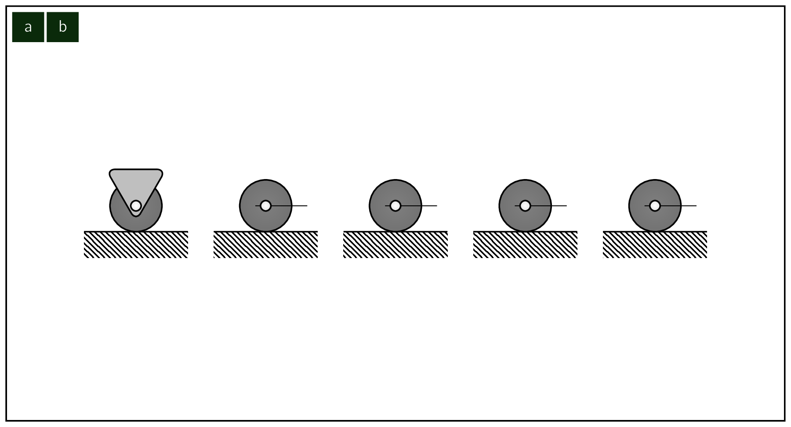
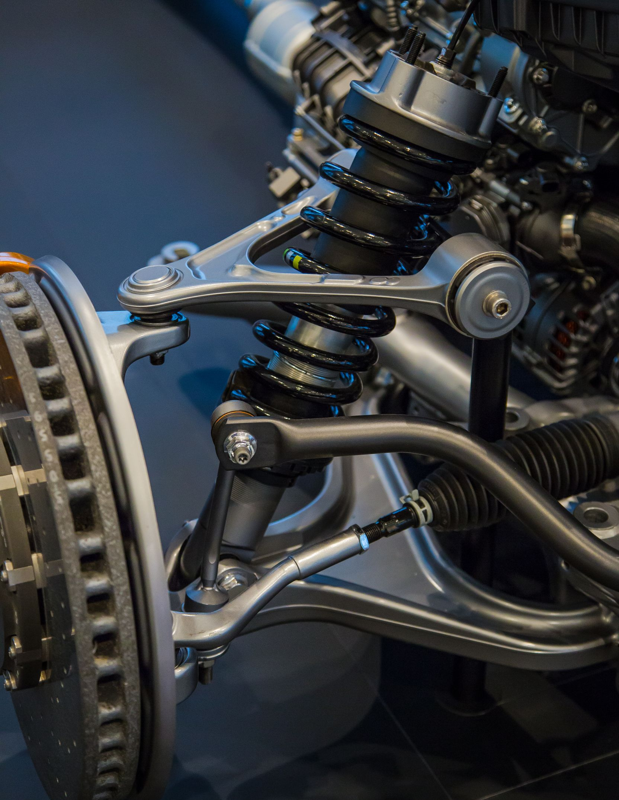
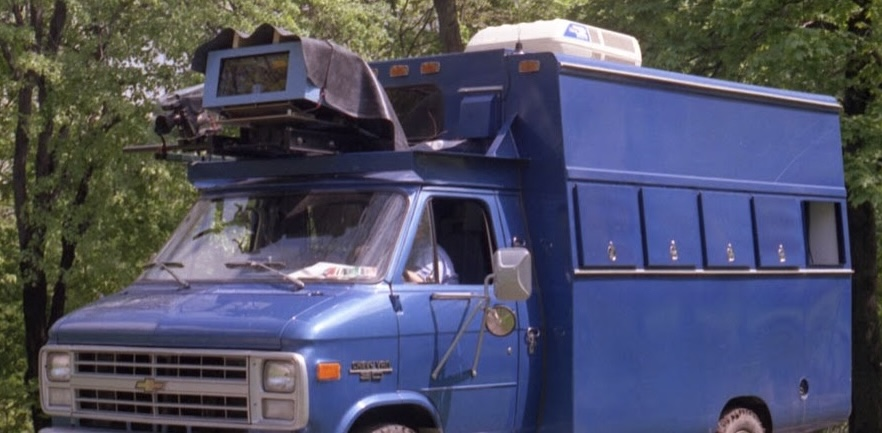
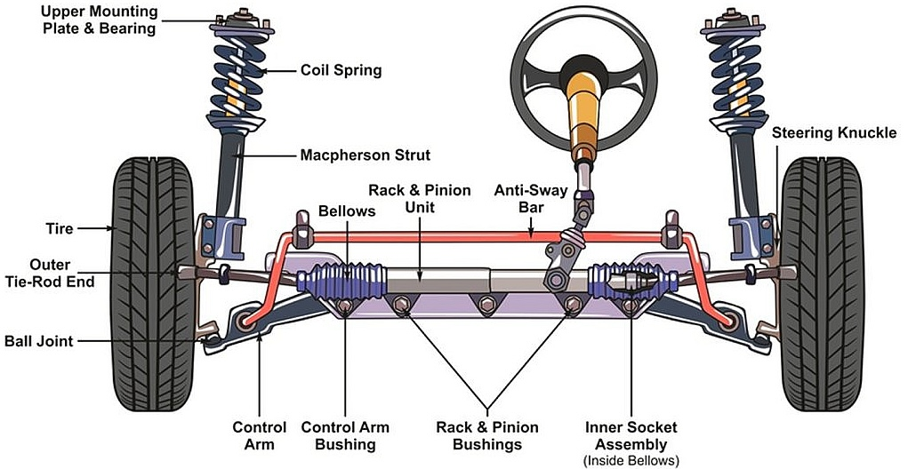
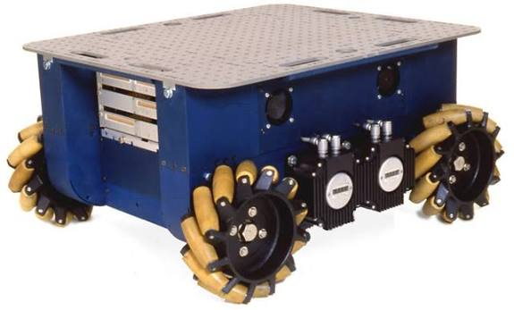
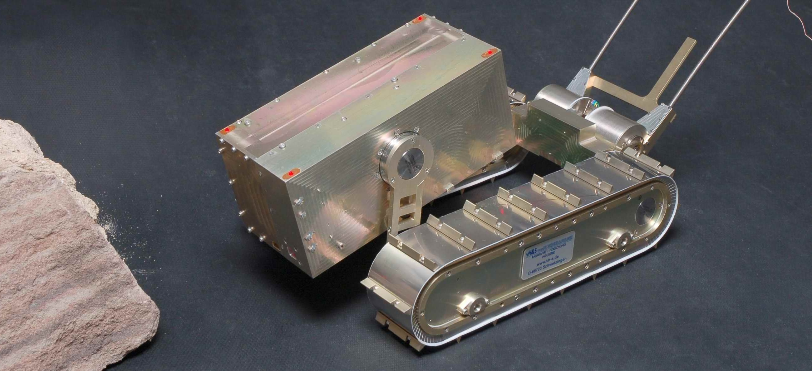
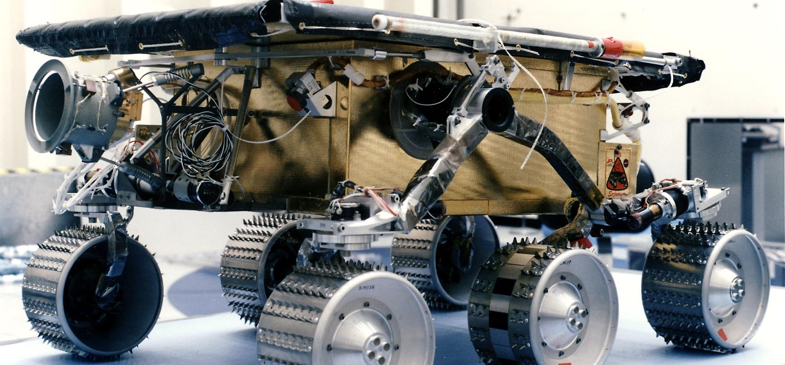
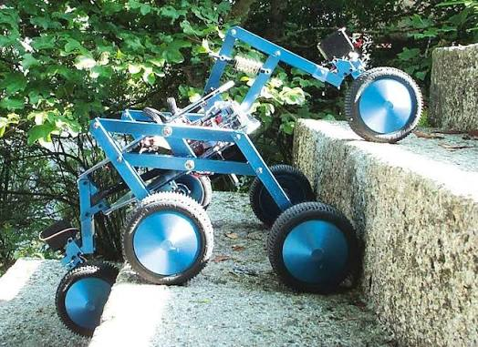

The wheel has been by far the most popular locomotion mechanism in AMRAutonomous Mobile RoboticsAutonomous Mobile Robotics and in man-made vehicles in general. [15] This should be clear as wheel motion is one of the most efficient method of converting energy to motion. It can achieve high efficiencies, as demonstrated in figure 2.3, and does so with a relatively simple mechanical implementation.
Balance is NOT usually a research problem in
Therefore,
can the robot wheels provide sufficient traction and stability for the robot to cover all of the desired terrain, and does the robot’s wheeled configuration enable sufficient control over the velocity of the robot?
As we will see, there is a very large space of possible wheel configurations when we considers possible techniques for mobile robot locomotion. We will begin by discussing the wheel in detail, as there are a number of different wheel types with specific strengths and weaknesses.
Then, we will examine complete wheel configurations that deliver particular forms of locomotion for a mobile robot.
Wheel Design

There are four (
The standard wheel and the castor wheel have a
The spherical wheel is a truly omnidirectional wheel, often designed so that it may be actively powered to spin along any direction. One mechanism for implementing this spherical design imitates the computer mouse, providing actively powered rollers that rest against the top surface of the sphere and impart rotational force.
Regardless of what wheel is used, in robots designed for all-terrain environments and in robots with
more than three ( 
Wheel Geometry
The choice of wheel types for an AMRAutonomous Mobile RoboticsAutonomous Mobile
Robotics is strongly linked to the choice of wheel arrangement, or wheel geometry. When
designing a mobile robot locomotion we must consider these two (
Why does wheel type and wheel geometry matter?
Three fundamental characteristics of a robot are governed by these choices:
-
maneuverability,
-
controllability
-
stability.
Unlike automobiles, which are largely designed for a highly standardised environment [20] such as the road network, mobile robots are designed for applications in a wide variety of situations. Automobiles all share similar wheel configurations as there is one region in the design space that maximises maneuverability, controllability and stability for their standard environment:
the paved road.
However, there is no single wheel configuration that maximises these qualities for the variety of
environments faced by different AMRAutonomous Mobile RoboticsAutonomous Mobile Robotics. So,
we will see great variety in the wheel configurations of mobile robots. In fact, few robots use
the

Table 2.1 gives an overview of wheel configurations ordered by the number of wheels. This table shows both the selection of particular wheel types and their geometric configuration on the robot chassis. Note that some of the configurations shown are of little use in mobile robot applications. For instance, the 2-wheeled bicycle arrangement has moderate maneu- verability and poor controllability. Like a single-leg hopping machine, it can never stand still. Nevertheless, this table provides an indication of the large variety of wheel configura- tions that are possible in mobile robot design.
Surprisingly, the minimum number of wheels required for static stability is two (
Hyperstatic means a structural system is
Some robots are omnidirectional, meaning that they can move at any time in any direction along the ground plane regardless of the orientation of the robot around its vertical axis. This level of maneuverability requires wheels that can move in more than just a single direction, and so omnidirectional robots usually employ swedish or spherical wheels that are powered.
A good example is
Because the vertical axis is offset from the ground contact path, the result of this steering motion is robot motion.
In the research community, another classes of AMRAutonomous Mobile RoboticsAutonomous Mobile Robotics are popular which achieve high maneuverability, only slightly inferior to that of the omnidirectional configurations. In such robots, motion in a particular direction may initially require a rotational motion. With a circular chassis and an axis of rotation at the center of the robot, such a robot can spin without changing its ground footprint. The most popular such robot is the two-wheel differential drive robot where the two wheels rotate around the center point of the robot. One or two additional ground contact points may be used for stability, based on the application specifics.
In contrast to the above configurations, consider the Ackerman steering configuration common in automobiles. Such a vehicle typically has a turning diameter that is larger than the car. Furthermore, for such a vehicle to move sideways requires a parking maneuver consisting of repeated changes in direction forward and backward. [21] Ackerman steering geometries have been especially popular in the hobby robotics market, where a robot can be built by starting with a remote-control race car kit and adding sensing and autonomy to the existing mechanism. However, the limited maneuverability of Ackerman steering has an important advantage:
its directionality and steering geometry provide it with

There is generally an inverse correlation between controllability and maneuverability.
For example, the omni-directional designs such as the four castor-wheeled configuration require significant processing to convert desired rotational and translational velocities to individual wheel commands. Furthermore, such omni-directional designs often have greater degrees of freedom at the wheel.
For instance, the swedish wheel has a set of free rollers
along the wheel perimeter. These DoFDegrees of FreedomDegrees of Freedom cause an
For example, an
In a differential drive vehicle, the two
(
Now let’s describe four (
Synchro Drive
The synchro drive configuration (figure 2.22) is a popular arrangement of wheels in indoor
AMRAutonomous Mobile RoboticsAutonomous Mobile Robotics applications. It is an interesting
configuration as, although there are three driven and steered wheels, only two (
Chassis orientation causes drift due to uneven
Synchro drive is particularly advantageous in cases where omnidirectionality is needed. So long as each vertical steering axis is aligned with the contact path of each tire, the robot can always re-orient its wheels and move along a new trajectory without changing its footprint.
Of course, if the robot chassis has directionality and the designers intend to re-orient the chassis purposefully, then synchro drive is only appropriate when combined with an independently rotating turret that attaches to the wheel chassis.
In terms of dead-reckoning, synchro drive systems are generally superior to true omni-directional
configurations but inferior to differential drive and
-
The translation motor generally drives the three wheels using a single belt. Due to slop and backlash in the drivetrain, whenever the drive motor engages, the closest wheel begins spinning before the furthest wheel, causing a small change in the orientation of the chassis. With additional changes in motor speed, these small angular shifts accumulate to create a large error in orientation during dead-reckoning.
-
The mobile robot has no direct control over the orientation of the chassis. Depending on the orientation of the chassis, the wheel thrust can be highly asymmetric, with two wheels on one side and the third wheel alone, or symmetric, with one wheel on each side and one wheel straight ahead or behind, as shown in (2.22). The asymmetric cases results in a variety of errors when tire-ground slippage can occur, again causing errors in dead-reckoning of robot orientation.
Omnidirectional Drive
As we will see later, omni-directional movement is of great interest for complete manoeuvrability. Omnidirectional robots which are able to move in any direction () at any time are also holonomic.
They can be realized by either using spheric, castor or
Let’s look at these three examples:
Omnidirectional locomotion with three spheric wheels The omnidirectional robot depicted in figure 2.23 is based on three spheric wheels, each actuated by one motor. In this design, the spheric wheels are suspended by three contact points, two given by spherical bearings and one by the a wheel connected to the motor axle.
This concept provides excellent maneuverability and is simple in design. However, it is limited to flat surfaces and small loads, and it is quite difficult to find round wheels with high friction coefficients
Omnidirectional locomotion with four swedish wheels The omnidirectional arrangement depicted in Fig. 1.14 has been used successfully on several research robots.

This configuration consists of four
For example, when all four wheels spin “forward” or “backward”, the robot as a whole moves in a straight line forward and backward, respectively. However, when one diagonal pair of wheels is spun in the same direction and the other diagonal pair is spun in the opposite direction, the robot moves laterally.
This four-wheel arrangement of
Omnidirectional locomotion with four castor wheels and eight motors Another solution for omnidirectionality is to use castor wheels. This is done for the Nomad XR4000 form Nomadics (fig. 2.25) giving it an excellent maneuverability. Unfortunately Nomadics Technology has ceased the production of mobile robots.
The above two examples are drawn from Table 2.1, but this is not an exhaustive list of all wheeled locomotion techniques. Hybrid approaches that combine legged and wheeled loco- motion, or tracked and wheeled locomotion, can also offer particular advantages. Below are two unique designs created for specialized applications.
Tracked Slip/Skid Locomotion

In the wheel configurations discussed above, we have made the assumption that wheels are not allowed to skid against the surface. An alternative form of steering, termed slip/skid, may be used to re-orient the robot by spinning wheels that are facing the same direction at different speeds or in opposite directions. The army tank operates this way, and Nanokhod, shown in Fig. 1.15, is an example of an AMRAutonomous Mobile RoboticsAutonomous Mobile Robotics based on the same concept. Robots that make use of tread have much larger ground contact patches, and this can significantly improve their maneuverability in loose terrain compared to conventional wheeled designs. However, due to this large ground contact patch, changing the orientation of the robot usually requires a skidding turn, wherein a large portion of the track must slide against the terrain.
The disadvantage of such configurations is coupled to the slip/skid steering. Because of the large amount of skidding during a turn, the exact center of rotation of the robot is hard to predict and the exact change in position and orientation is also subject to variations depending on the ground friction. Therefore, dead-reckoning on such robots is highly inaccurate. This is the trade-off that is made in return for extremely good maneuverability and traction over rough and loose terrain. Furthermore, a slip/skid approach on a high-friction surface can quickly overcome the torque capabilities of the motors being used. In terms of power efficiency, this approach is reasonably efficient on loose terrain but extremely inefficient otherwise.
Walking robots might offer the best maneuverability in rough terrain.
However, they are inefficient on flat ground and require sophisticated control. Hybrid solutions,
combining the adaptability of legs with the efficiency of wheels offer an interesting compromise.
Solutions that passively adapt to the terrain are of particular interest for field and space robotics. The

A more advanced mobile robot design for similar applications has recently been produced by
EPFL. [22] 
Using a rhombus configuration, the Shrimp has a steering wheel in the front and the rear, and two wheels arranged on a bogy on each side. The front wheel has a spring suspension to guarantee optimal ground contact of all wheels at any time. The steering of the rover is realized by synchronizing the steering of the front and rear wheels and the speed difference of the bogy wheels. This allows for high precision maneuvers and turning on the spot with minimum slip/skid of the four center wheels. The use of parallel articulations for the front wheel and the bogies creates a virtual center of rotation at the level of the wheel axis.
This ensures maximum stability and climbing abilities even for very low friction coefficients between the wheel and the ground.
As mobile robotics research matures we find ourselves able to design more intricate mechanical systems. At the same time, the control problems of inverse kinematics and dynamics are now so readily conquered that these complex mechanics can in general be controlled.
So, in the near future, we should expect to see a great number of unique, hybrid AMRAutonomous Mobile RoboticsAutonomous Mobile Robotics that draw together advantages from several of the underlying locomotion mechanisms that we have discussed in this chapter. They will each be technologically impressive, and each will be designed as the expert robot for its particular environmental niche. 6]1: A robot may not injure a human being or, through inaction, allow a human being to come to harm; 2: A robot must obey the orders given it by human beings except where such orders would conflict with the First Law; 3: A robot must protect its own existence as long as such protection does not conflict with the First or Second Law; The Zeroth Law: A robot may not harm humanity, or, by inaction, allow humanity to come to harm.